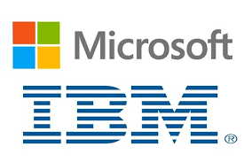

IBM partnership

IBM, the leading supplier of computer equipment to commercial enterprises at the time, approached Microsoft in July 1980 concerning software for its upcoming personal computer, the IBM PC.IBM first proposed that Microsoft write the BASIC interpreter. IBM's representatives also mentioned that they needed an operating system, and Gates referred them to Digital Research (DRI), makers of the widely used CP/M operating system.IBM's discussions with Digital Research went poorly, however, and they did not reach a licensing agreement. IBM representative Jack Sams mentioned the licensing difficulties during a subsequent meeting with Gates and asked if Microsoft could provide an operating system.
A few weeks later, Gates and Allen proposed using 86-DOS, an operating system similar to CP/M, that Tim Paterson of Seattle Computer Products (SCP) had made for hardware similar to the PC.[ Microsoft made a deal with SCP to be the exclusive licensing agent of 86-DOS, and later the full owner.
Microsoft employed Paterson to adapt the operating system for the PC and delivered it to IBM as PC DOS for a one-time fee of $50,000.Rather than the contract itself, which earned Microsoft a relatively small fee, the prestige brought to Microsoft by IBM's adoption of their operating system was the origin of Microsoft's transformation from a small business to the World's leading software company. Gates had not offered to transfer the copyright on the operating system to IBM because he believed that other personal computer makers would clone IBM's PC hardware.They did, making the IBM-compatible PC, running DOS, a de facto standard. The sales of MS-DOS (the version of DOS sold to customers other than IBM) made Microsoft a major player in the industry.The press quickly identified Microsoft as being very influential on the IBM PC. PC Magazine asked if Gates was "the man behind the machine?".
Gates oversaw Microsoft's company restructuring on June 25, 1981, which re-incorporated the company in Washington state and made Gates the president and chairman of the board, with Paul Allen as vice president and vice chairman. In early 1983, Allen left the company after receiving a Hodgkin lymphoma diagnosis, effectively ending the formal business partnership between Gates and Allen, which had been strained months prior due to a contentious dispute over Microsoft equity.Later in the decade, Gates repaired his relationship with Allen and together the two donated millions to their childhood school Lakeside.They remained friends until Allen's death in October 2018.

.jpg)
.jpg)
.jpg)
.jpg)